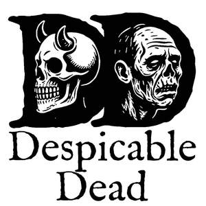

Trade Mark Journal No.2025/038 19 September 2025
UK00004259258 4 September 2025 (9,16,21,25,41)

- Class 9
- Downloadable audio and video recordings featuring satirical, historically informed biographies and cultural commentary; downloadable podcasts in the field of history, satire and entertainment; downloadable electronic publications, namely, e-books, newsletters and digital magazines featuring satirical historical profiles.
- Class 16
- Printed books, pamphlets, periodicals, brochures, posters, postcards, stickers and other printed publications featuring satirical, historically informed biographies and cultural commentary; printed matter in the nature event programmes and souvenir booklets; stationery.
- Class 21
- Mugs, cups, drinking glasses, coasters, flasks and other drinkware; decorative household items, namely, figurines, ornaments and plaques; all themed to satirical, historically informed biographies and graveyard tour-style entertainment.
- Class 25
- Clothing, namely, t-shirts, sweatshirts, hoodies, jackets, scarves and hats; headwear; footwear; all featuring designs, artwork or phrases relating to satirical, historically informed biographies and graveyard tour-style entertainment.
- Class 41
- Entertainment services, namely, the presentation of satirical, historically informed biographies in the style of guided graveyard tours delivered through live performances, recorded audio programmes, video productions and online streaming content; production and distribution of multimedia entertainment in the fields of history, satire and cultural commentary; provision of non-downloadable videos, podcasts and audio-visual content via global communications networks.
SEARUSWEGA WORKSHOP LTD